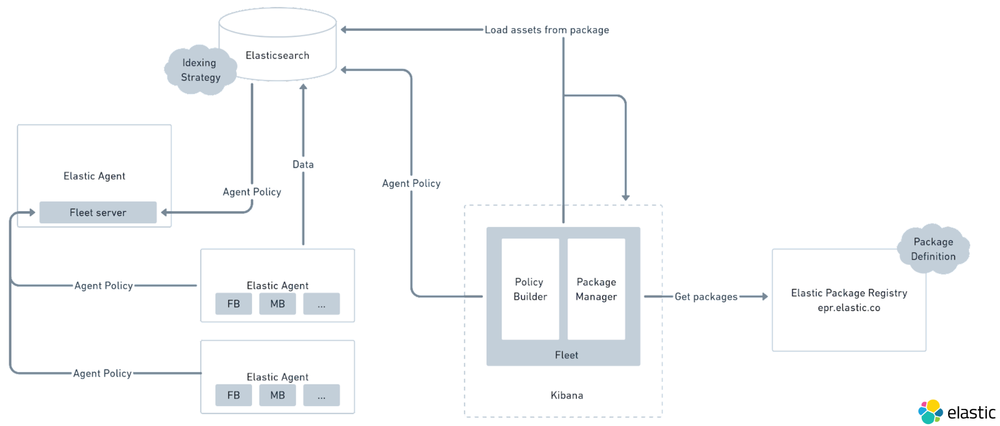
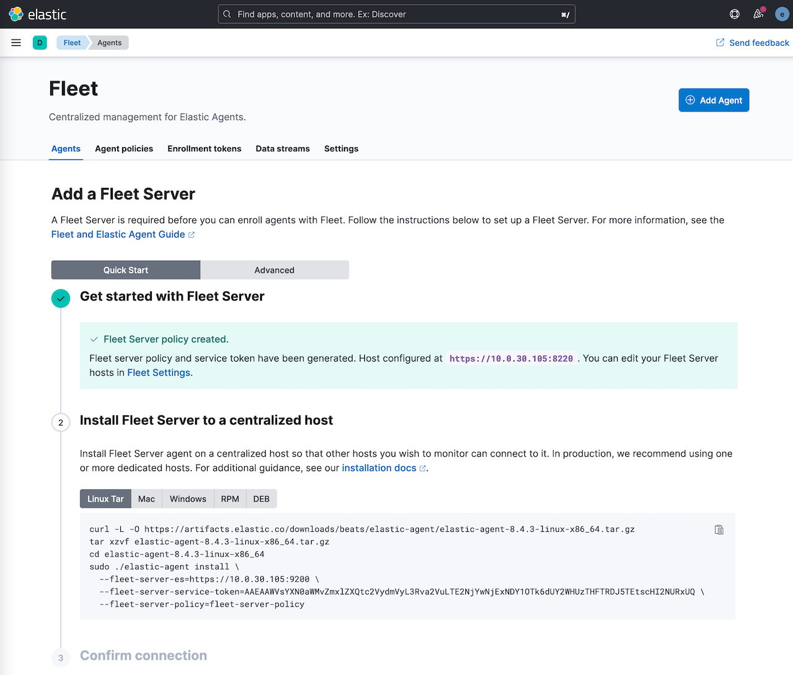
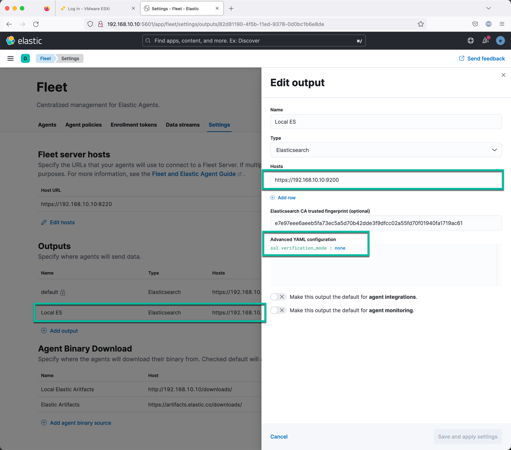
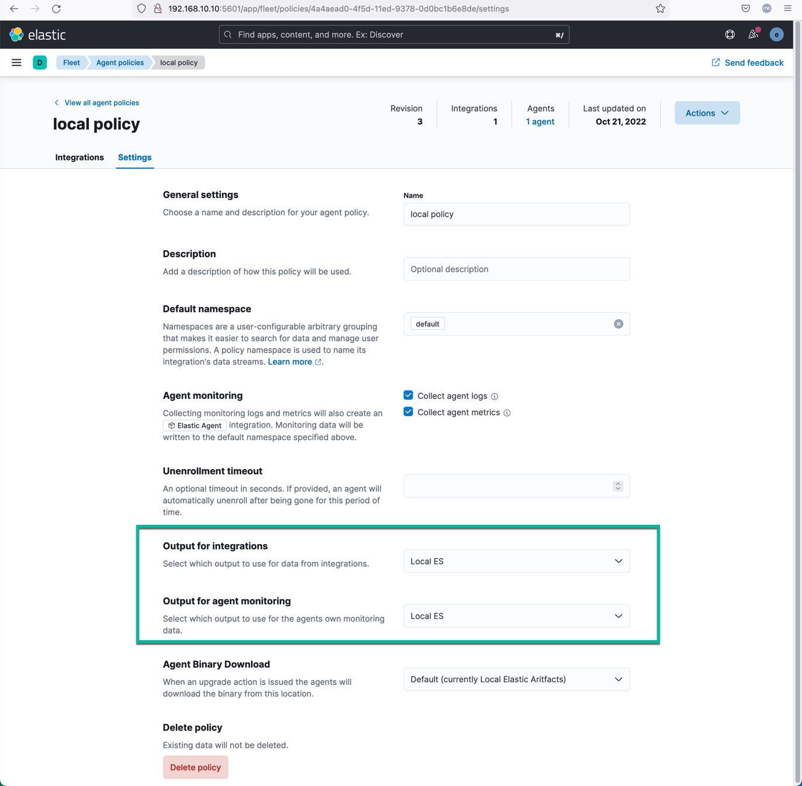
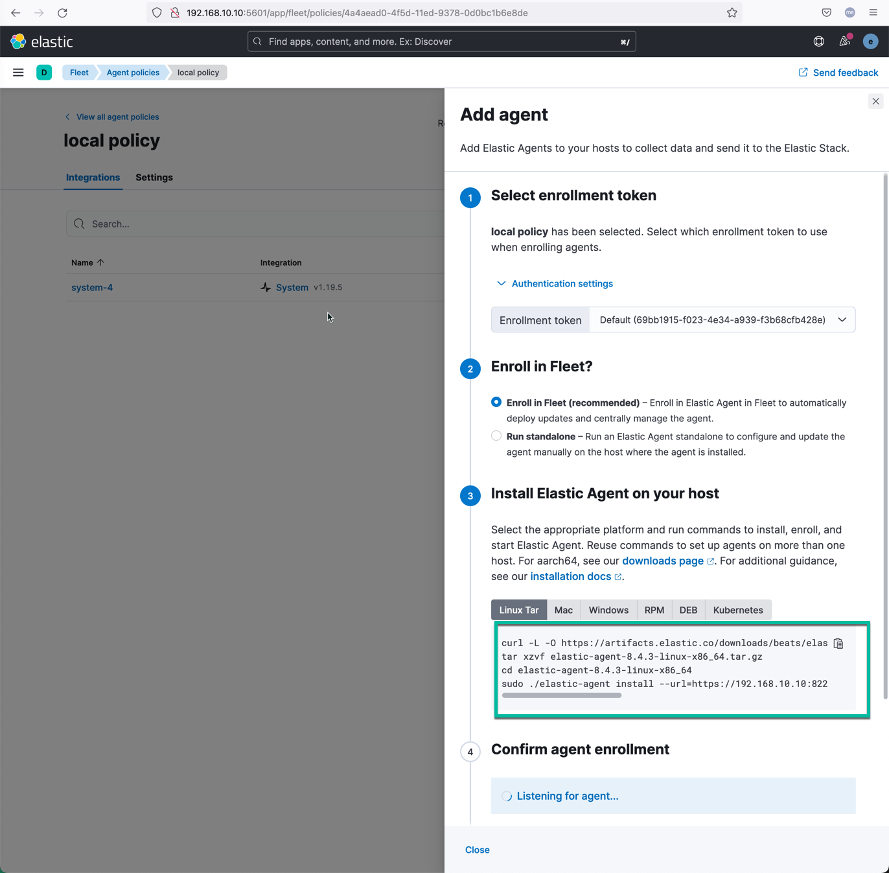
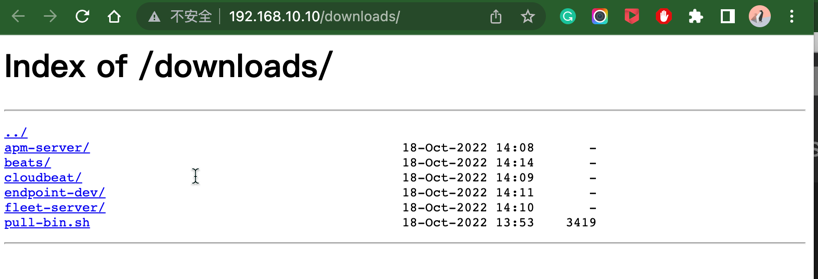
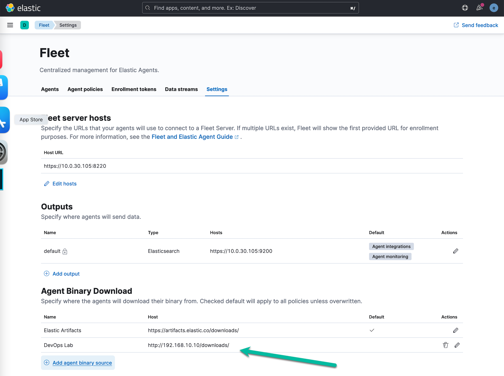
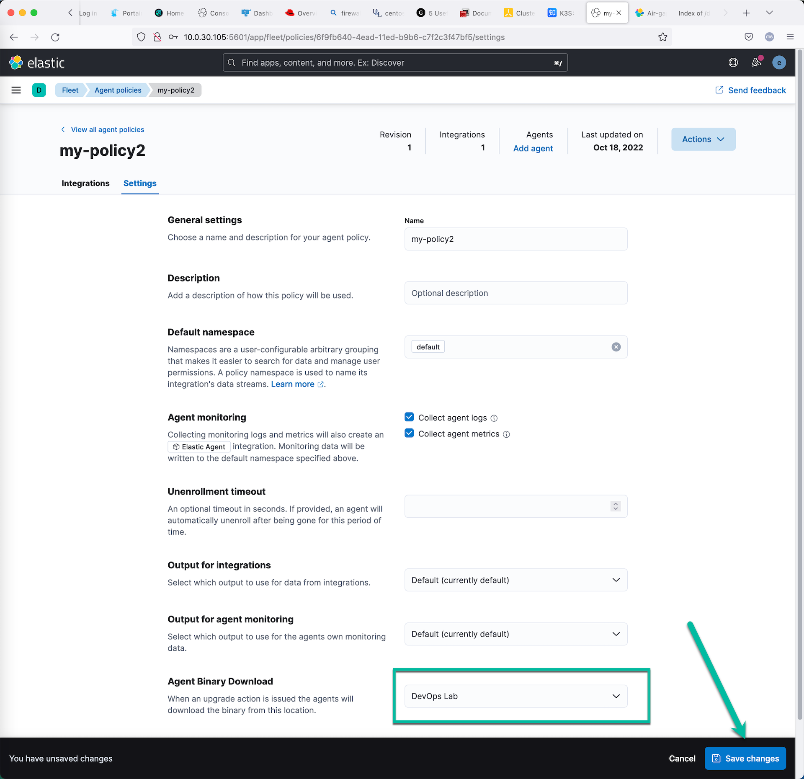
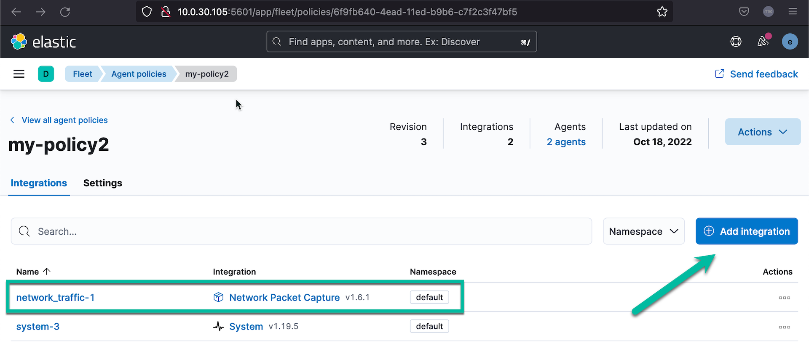
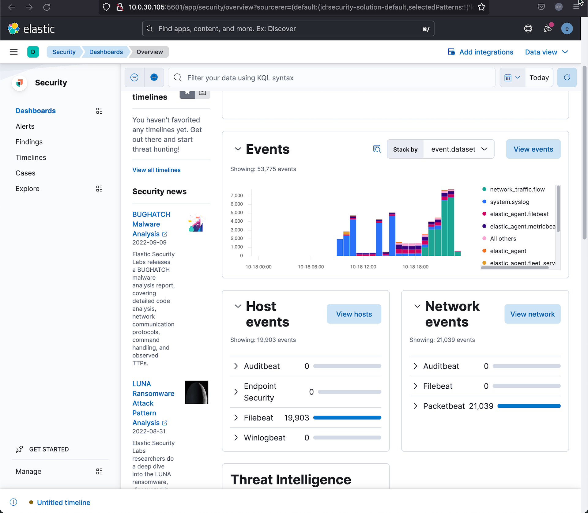

在本课程中您将会学到：

核心组件概述：
本教程的目标测试环境：
在虚拟机 A 上完成本章节操作。
SSH 登录到操作系统，下载 Elasticsearch 的 rpm 安装包，用 rpm 的方式安装 Elasticssearch 服务器。 dnf install elasticsearch-8.4.3-x86_64.rpm
[root@elk8 ~]# dnf install elasticsearch-8.4.3-x86_64.rpm
Updating Subscription Management repositories.
Red Hat Enterprise Linux 9 for x86_64 - BaseOS (RPMs) 3.9 kB/s | 4.1 kB 00:01
Red Hat Enterprise Linux 9 for x86_64 - AppStream (RPMs) 3.9 kB/s | 4.1 kB 00:01
Dependencies resolved.
=============================================================================================================================
Package Architecture Version Repository Size
=============================================================================================================================
Installing:
elasticsearch x86_64 8.4.3-1 @commandline 540 M
Transaction Summary
=============================================================================================================================
Install 1 Package
Total size: 540 M
Installed size: 1.1 G
Is this ok [y/N]: y
Downloading Packages:
Running transaction check
Transaction check succeeded.
Running transaction test
Transaction test succeeded.
Running transaction
Preparing : 1/1
Running scriptlet: elasticsearch-8.4.3-1.x86_64 1/1
Creating elasticsearch group... OK
Creating elasticsearch user... OK
Installing : elasticsearch-8.4.3-1.x86_64 1/1
Running scriptlet: elasticsearch-8.4.3-1.x86_64 1/1
--------------------------- Security autoconfiguration information ------------------------------
Authentication and authorization are enabled.
TLS for the transport and HTTP layers is enabled and configured.
The generated password for the elastic built-in superuser is : guJrLagKN5bsmUh72bha
If this node should join an existing cluster, you can reconfigure this with
'/usr/share/elasticsearch/bin/elasticsearch-reconfigure-node --enrollment-token <token-here>'
after creating an enrollment token on your existing cluster.
You can complete the following actions at any time:
Reset the password of the elastic built-in superuser with
'/usr/share/elasticsearch/bin/elasticsearch-reset-password -u elastic'.
Generate an enrollment token for Kibana instances with
'/usr/share/elasticsearch/bin/elasticsearch-create-enrollment-token -s kibana'.
Generate an enrollment token for Elasticsearch nodes with
'/usr/share/elasticsearch/bin/elasticsearch-create-enrollment-token -s node'.
-------------------------------------------------------------------------------------------------
### NOT starting on installation, please execute the following statements to configure elasticsearch service to start automatically using systemd
sudo systemctl daemon-reload
sudo systemctl enable elasticsearch.service
### You can start elasticsearch service by executing
sudo systemctl start elasticsearch.service
/usr/lib/tmpfiles.d/elasticsearch.conf:1: Line references path below legacy directory /var/run/, updating /var/run/elasticsearch → /run/elasticsearch; please update the tmpfiles.d/ drop-in file accordingly.
Verifying : elasticsearch-8.4.3-1.x86_64 1/1
Installed products updated.
Installed:
elasticsearch-8.4.3-1.x86_64
Complete!
[root@elk8 ~]#
安装完毕之后，用 vi 编辑器打开 /etc/elasticsearch/elasticsearch.yml 配置文件 ； 在这个默认配置文件中寻找类似这样的一行 cluster.initial_master_nodes: ["elk8"] ；将这一行注释掉。
然后在此配置文件的最下面增加下面这几行。
cluster.name: homelab-elk8
discovery.type: single-node
network.host: 0.0.0.0
xpack.security.authc.api_key.enabled: true
启动 Elasticsearch 服务，并查看服务的状态。
sudo systemctl daemon-reload
sudo systemctl enable elasticsearch.service
sudo systemctl start elasticsearch.service
sudo systemctl status elasticsearch
在使用 ES 前，可以先修改ES服务初始化的内建用户密码，改成自己好记的安全可控密码。否则需要到 ES 的启动日志里寻找系统自动生产的管理员密码。
运行 /usr/share/elasticsearch/bin/elasticsearch-reset-password -u elastic -i 命令修改 ES 的管理员账号 elastic 的密码。
[root@elk8 ~]# /usr/share/elasticsearch/bin/elasticsearch-reset-password -u elastic -i
This tool will reset the password of the [elastic] user.
You will be prompted to enter the password.
Please confirm that you would like to continue [y/N]y
Enter password for [elastic]:
Re-enter password for [elastic]:
Password for the [elastic] user successfully reset.
在启动 ES 服务前，打开后续测试所需要的防火墙端口。
firewall-cmd --permanent --add-port=9200/tcp
firewall-cmd --permanent --add-port=5601/tcp
firewall-cmd --permanent --add-port=8220/tcp
firewall-cmd --reload
在浏览器里访问 es 的访问网址 https://10.0.30.105:9200/ ，忽略关于证书的安全提示，输入上面所修改的 elastic 账户信息，测试是否可以正常登录。
在虚拟机 A 上完成本章节操作。
下载 Kibana 的 rpm 安装包到服务器，然后执行下面的安装命令
[root@elk8 ~]# dnf install kibana-8.4.3-x86_64.rpm
Updating Subscription Management repositories.
Last metadata expiration check: 0:22:56 ago on Sun 16 Oct 2022 02:20:20 PM CST.
Dependencies resolved.
=======================================================================================================================================
Package Architecture Version Repository Size
=======================================================================================================================================
Installing:
kibana x86_64 8.4.3-1 @commandline 274 M
Transaction Summary
=======================================================================================================================================
Install 1 Package
Total size: 274 M
Installed size: 649 M
Is this ok [y/N]: y
Downloading Packages:
Running transaction check
Transaction check succeeded.
Running transaction test
Transaction test succeeded.
Running transaction
Preparing : 1/1
Running scriptlet: kibana-8.4.3-1.x86_64 1/1
Installing : kibana-8.4.3-1.x86_64 1/1
Running scriptlet: kibana-8.4.3-1.x86_64 1/1
Creating kibana group... OK
Creating kibana user... OK
Created Kibana keystore in /etc/kibana/kibana.keystore
/usr/lib/tmpfiles.d/elasticsearch.conf:1: Line references path below legacy directory /var/run/, updating /var/run/elasticsearch → /run/elasticsearch; please update the tmpfiles.d/ drop-in file accordingly.
Verifying : kibana-8.4.3-1.x86_64 1/1
Installed products updated.
Installed:
kibana-8.4.3-1.x86_64
Complete!
在启动 Kiban 服务器之前，先需要创建 Kibana 需要的各种加密 key ，执行下面的命令。
/usr/share/kibana/bin/kibana-encryption-keys generate
xpack.encryptedSavedObjects.encryptionKey: 2e71f1b16031c2b111b76276268dbf9e
xpack.reporting.encryptionKey: 84cb58b5e944fa9f65f73382384612a5
xpack.security.encryptionKey: c5ac5b306ee011838a67e2eaf4154dd0
记录以上三行配置参数，并增加2行新参数，将它们全部添加到 Kibana 默认的配置文件中。
server.host: 0.0.0.0
server.publicBaseUrl: "http://10.0.30.105:5601"
xpack.encryptedSavedObjects.encryptionKey: 2e71f1b16031c2b111b76276268dbf9e
xpack.reporting.encryptionKey: 84cb58b5e944fa9f65f73382384612a5
xpack.security.encryptionKey: c5ac5b306ee011838a67e2eaf4154dd0
用 vi 打开 Kibana 的默认配置文件 /etc/kibana/kibana.yml ，将上面的 5 行配置参数添加到文件中。
在命令行执行 systemctl enable --now kibana 命令启动 Kibana 服务器.
然后执行命令 tail -f /var/log/messages ， 在日志中寻找 Kibana 服务启动的信息，等待出现 Kibana 配置的访问 URL。在日志中寻找类似这样的信息：
Oct 18 10:36:48 elk8 kibana[2163]: i Kibana has not been configured.
Oct 18 10:36:48 elk8 kibana[2163]: Go to http://0.0.0.0:5601/?code=732948 to get started.
将 0.0.0.0 替换为这台虚拟机的 IP 地址，然后在浏览器中打开这个类似这个 http://10.0.30.105:5601/?code=732948 网址。网页中会出现一个大输入框，等待输入Kibana 注册秘钥。
在命令行执行 /usr/share/elasticsearch/bin/elasticsearch-create-enrollment-token -s kibana 命令，从而获取 Kibana 的注册令牌。
[root@elk8 ~]# /usr/share/elasticsearch/bin/elasticsearch-create-enrollment-token -s kibana
eyJ2ZXIiOiI4LjQuMyIsImFkciI6WyIxOTIuMTY4LjEwLjEwOjkyMDAiXSwiZmdyIjoiZTdlOTdlZWU2YWVlYjVmYTczZWM1YTVkNzBiNDJkZGUzZjlkZmNjMDJhNTVmZDcwZjAxOTQwZmExNzE5YWM2MSIsImtleSI6IjNHLVEzNE1CYnA4c3p4TEZEZXpCOk0wUDMzRC1VVFAyT0ZxQVFBekNKSWcifQ==
将这个 Token 复制到网页里，完成Kibana 的初始化配置，最后用 es 的管理员账号登录 Kibana。
从 kiban 目录中找到 es 的根 ca 证书，将其安装在系统的默认根证书目录中。查看 Kibana 的配置文件找到类似这样的一行配置信息。
elasticsearch.ssl.certificateAuthorities: [/var/lib/kibana/ca_1666060779947.crt]
运行下面的命令安装这个根证书。
update-ca-trust enable
cp /var/lib/kibana/ca_1666060779947.crt /etc/pki/ca-trust/source/anchors/
update-ca-trust extract
建议将这个根证书也用这个方法复制到其他需要用 Elastic Agent 采集监控数据的操作系统中，并安装备用。也可以在 Elastic Agent 安装的时候指定忽略 ES 证书校验的参数。
在虚拟机 A 上完成本章节操作。
在 Kibana 的菜单中找到， Fleet 选项，点击 Settings，然后点击 Edit Hosts ，选择增加 Fleet server 配置信息，输入 https://10.0.30.105:8220 ，注意这里必须是 https协议。
回到 Fleet 主页，找到 agent 管理的地方，按照流程做，点击创建 Fleet Server 配置。然后就会在页面上生成 Fleet 服务器的安装配置命令。

按着提示的命令参数安装 Fleet 服务器。
curl -L -O https://artifacts.elastic.co/downloads/beats/elastic-agent/elastic-agent-8.4.3-linux-x86_64.tar.gz
tar xzvf elastic-agent-8.4.3-linux-x86_64.tar.gz
cd elastic-agent-8.4.3-linux-x86_64
sudo ./elastic-agent install \
--fleet-server-es=https://192.168.10.10:9200 \
--fleet-server-service-token=AAEAAWVsYXN0aWMvZmxlZXQtc2VydmVyL3Rva2VuLTE2NjU5MTM3ODg1NTA6aWdrR1pvNk9SWmk5N09tV3pUQktTUQ \
--fleet-server-policy=fleet-server-policy
--insecure
上面是连续四条安装命令，需要在最后一条命中，增加一个参数 --insecure ；这样可以确保 Fleet 服务器的正常配置。
在 Fleet 服务器正常启动以后，上面创建 Fleet 服务器配置的网页上的最后一步就会显示：Fleet 服务器已经连接正常，等待注册 Elastic Agent 。这样表明 Fleet 服务器已经安装正常，并且运行在默认的代理配置采集策略下。
可以在 Kibana 的界面里查看 Fleet 服务器的监控信息。点击 Kibana 左上角的菜单：Observability -> Infrastructure -> Inventory ，即可看到 Fleet 服务器的监控数据。
为了让测试更加方便，还需要将 Output 到 Elasticsearch 的参数修改成不去校验 ssl 证书。否则 Elastic Agent 成功注册到 Fleet 服务器以后，数据还是无法正常上传到 Elasticsearch 服务器。配置方式如下图所示。

在 Fleet 服务器的 Settings 配置中，在 Outputs 部分，创建一条新的 Output 记录。
ssl.verification_mode : none保持了这条 Fleet 服务器的新配置以后，修改其他需要引用这个配置参数的管理策略。如下图。

新建或者编辑一条已有的 Agent Policy ：
保存这条策略以后备用。
在虚拟机 B 上完成本章节操作。
在 Fleet 的管理界面中新增一个名为 my-policy1 的管理策略，避免和 Fleet 服务器使用相同的策略。点击 Add agent 连接，获取如下代理注册命令。

curl -L -O https://artifacts.elastic.co/downloads/beats/elastic-agent/elastic-agent-8.4.3-linux-x86_64.tar.gz
tar xzvf elastic-agent-8.4.3-linux-x86_64.tar.gz
cd elastic-agent-8.4.3-linux-x86_64
sudo ./elastic-agent install --url=https://10.0.30.105:8220 --enrollment-token=NW9ZTjZZTUJtUENhc0ZFTDI5SV86MkZQT1hlc2dUOEdWZnRrWWhNbXVjdw==
将上面的命令复制到一个写字板中，修改最后一条命令，在最后增加--insecure 参数，如果不加这个参数，远程 Agent 的注册就会由于无法信任 Fleet 服务器的自签名证书而失败。
你也可以手工下载好 elastic-agent-8.4.3-linux-x86_64.tar.gz 文件，这样不用每次都重复从 Elastic 官网下载安装包；但是重复的在多个被管理服务器上复制也很麻烦。
./elastic-agent install --url=https://10.0.30.105:8220 --enrollment-token=NW9ZTjZZTUJtUENhc0ZFTDI5SV86MkZQT1hlc2dUOEdWZnRrWWhNbXVjdw== --insecure
通过执行上面的命令，我们就在被管理服务器上，一键式的安装了用于数据采集功能的 Elastic Agent ，并将其注册到 Fleet 服务器上。
Elastic Agent 的安装方式：
为了让局域网中的被管理操作系统能在本地局域网里下载到 Elastic Stack 技术栈中，所有可以通过 Fleet 服务器管理（安装、配置、升级、删除等）的组件，我们可以参考文档的方法：https://www.elastic.co/guide/en/fleet/8.4/air-gapped.html#host-artifact-registry 在本地部署一个安装包下载服务器。
首先，安装一个 Nginx 服务器，在根目录下创建目录 downloads ，并且运行下面的下载脚本。
curl -O https://artifacts.elastic.co/downloads/apm-server/apm-server-8.4.3-linux-x86_64.tar.gz
curl -O https://artifacts.elastic.co/downloads/apm-server/apm-server-8.4.3-linux-x86_64.tar.gz.sha512
curl -O https://artifacts.elastic.co/downloads/apm-server/apm-server-8.4.3-linux-x86_64.tar.gz.asc
curl -O https://artifacts.elastic.co/downloads/beats/auditbeat/auditbeat-8.4.3-linux-x86_64.tar.gz
curl -O https://artifacts.elastic.co/downloads/beats/auditbeat/auditbeat-8.4.3-linux-x86_64.tar.gz.sha512
curl -O https://artifacts.elastic.co/downloads/beats/auditbeat/auditbeat-8.4.3-linux-x86_64.tar.gz.asc
curl -O https://artifacts.elastic.co/downloads/beats/elastic-agent/elastic-agent-8.4.3-linux-x86_64.tar.gz
curl -O https://artifacts.elastic.co/downloads/beats/elastic-agent/elastic-agent-8.4.3-linux-x86_64.tar.gz.sha512
curl -O https://artifacts.elastic.co/downloads/beats/elastic-agent/elastic-agent-8.4.3-linux-x86_64.tar.gz.asc
curl -O https://artifacts.elastic.co/downloads/beats/filebeat/filebeat-8.4.3-linux-x86_64.tar.gz
curl -O https://artifacts.elastic.co/downloads/beats/filebeat/filebeat-8.4.3-linux-x86_64.tar.gz.sha512
curl -O https://artifacts.elastic.co/downloads/beats/filebeat/filebeat-8.4.3-linux-x86_64.tar.gz.asc
curl -O https://artifacts.elastic.co/downloads/beats/heartbeat/heartbeat-8.4.3-linux-x86_64.tar.gz
curl -O https://artifacts.elastic.co/downloads/beats/heartbeat/heartbeat-8.4.3-linux-x86_64.tar.gz.sha512
curl -O https://artifacts.elastic.co/downloads/beats/heartbeat/heartbeat-8.4.3-linux-x86_64.tar.gz.asc
curl -O https://artifacts.elastic.co/downloads/beats/metricbeat/metricbeat-8.4.3-linux-x86_64.tar.gz
curl -O https://artifacts.elastic.co/downloads/beats/metricbeat/metricbeat-8.4.3-linux-x86_64.tar.gz.sha512
curl -O https://artifacts.elastic.co/downloads/beats/metricbeat/metricbeat-8.4.3-linux-x86_64.tar.gz.asc
curl -O https://artifacts.elastic.co/downloads/beats/osquerybeat/osquerybeat-8.4.3-linux-x86_64.tar.gz
curl -O https://artifacts.elastic.co/downloads/beats/osquerybeat/osquerybeat-8.4.3-linux-x86_64.tar.gz.sha512
curl -O https://artifacts.elastic.co/downloads/beats/osquerybeat/osquerybeat-8.4.3-linux-x86_64.tar.gz.asc
curl -O https://artifacts.elastic.co/downloads/beats/packetbeat/packetbeat-8.4.3-linux-x86_64.tar.gz
curl -O https://artifacts.elastic.co/downloads/beats/packetbeat/packetbeat-8.4.3-linux-x86_64.tar.gz.sha512
curl -O https://artifacts.elastic.co/downloads/beats/packetbeat/packetbeat-8.4.3-linux-x86_64.tar.gz.asc
curl -O https://artifacts.elastic.co/downloads/cloudbeat/cloudbeat-8.4.3-linux-x86_64.tar.gz
curl -O https://artifacts.elastic.co/downloads/cloudbeat/cloudbeat-8.4.3-linux-x86_64.tar.gz.sha512
curl -O https://artifacts.elastic.co/downloads/cloudbeat/cloudbeat-8.4.3-linux-x86_64.tar.gz.asc
curl -O https://artifacts.elastic.co/downloads/endpoint-dev/endpoint-security-8.4.3-linux-x86_64.tar.gz
curl -O https://artifacts.elastic.co/downloads/endpoint-dev/endpoint-security-8.4.3-linux-x86_64.tar.gz.sha512
curl -O https://artifacts.elastic.co/downloads/endpoint-dev/endpoint-security-8.4.3-linux-x86_64.tar.gz.asc
curl -O https://artifacts.elastic.co/downloads/fleet-server/fleet-server-8.4.3-linux-x86_64.tar.gz
curl -O https://artifacts.elastic.co/downloads/fleet-server/fleet-server-8.4.3-linux-x86_64.tar.gz.sha512
curl -O https://artifacts.elastic.co/downloads/fleet-server/fleet-server-8.4.3-linux-x86_64.tar.gz.asc
将下载后的目录结构整理的和下载路径一致，目录结构如下所示：
[root@elk8 html]# tree downloads/
downloads/
├── apm-server
│ ├── apm-server-8.4.3-linux-x86_64.tar.gz
│ ├── apm-server-8.4.3-linux-x86_64.tar.gz.asc
│ └── apm-server-8.4.3-linux-x86_64.tar.gz.sha512
├── beats
│ ├── auditbeat
│ │ ├── auditbeat-8.4.3-linux-x86_64.tar.gz
│ │ ├── auditbeat-8.4.3-linux-x86_64.tar.gz.asc
│ │ └── auditbeat-8.4.3-linux-x86_64.tar.gz.sha512
│ ├── elastic-agent
│ │ ├── elastic-agent-8.4.3-linux-x86_64.tar.gz
│ │ ├── elastic-agent-8.4.3-linux-x86_64.tar.gz.asc
│ │ └── elastic-agent-8.4.3-linux-x86_64.tar.gz.sha512
│ ├── filebeat
│ │ ├── filebeat-8.4.3-linux-x86_64.tar.gz
│ │ ├── filebeat-8.4.3-linux-x86_64.tar.gz.asc
│ │ └── filebeat-8.4.3-linux-x86_64.tar.gz.sha512
│ ├── heartbeat
│ │ ├── heartbeat-8.4.3-linux-x86_64.tar.gz
│ │ ├── heartbeat-8.4.3-linux-x86_64.tar.gz.asc
│ │ └── heartbeat-8.4.3-linux-x86_64.tar.gz.sha512
│ ├── metricbeat
│ │ ├── metricbeat-8.4.3-linux-x86_64.tar.gz
│ │ ├── metricbeat-8.4.3-linux-x86_64.tar.gz.asc
│ │ └── metricbeat-8.4.3-linux-x86_64.tar.gz.sha512
│ ├── osquerybeat
│ │ ├── osquerybeat-8.4.3-linux-x86_64.tar.gz
│ │ ├── osquerybeat-8.4.3-linux-x86_64.tar.gz.asc
│ │ └── osquerybeat-8.4.3-linux-x86_64.tar.gz.sha512
│ └── packetbeat
│ ├── packetbeat-8.4.3-linux-x86_64.tar.gz
│ ├── packetbeat-8.4.3-linux-x86_64.tar.gz.asc
│ └── packetbeat-8.4.3-linux-x86_64.tar.gz.sha512
├── cloudbeat
│ ├── cloudbeat-8.4.3-linux-x86_64.tar.gz
│ ├── cloudbeat-8.4.3-linux-x86_64.tar.gz.asc
│ └── cloudbeat-8.4.3-linux-x86_64.tar.gz.sha512
├── endpoint-dev
│ ├── endpoint-security-8.4.3-linux-x86_64.tar.gz
│ ├── endpoint-security-8.4.3-linux-x86_64.tar.gz.asc
│ └── endpoint-security-8.4.3-linux-x86_64.tar.gz.sha512
├── fleet-server
│ ├── fleet-server-8.4.3-linux-x86_64.tar.gz
│ ├── fleet-server-8.4.3-linux-x86_64.tar.gz.asc
│ └── fleet-server-8.4.3-linux-x86_64.tar.gz.sha512
└── pull-bin.sh
12 directories, 34 files
[root@elk8 html]#
为了方便查看这个目录的内容，修改 nginx 的默认配置文件，在 http 这个部分增加下面三个参数：
autoindex on;
autoindex_exact_size off;
autoindex_localtime on;
重启 Nginix 服务器后，在浏览器中可以访问： http://192.168.10.10/downloads/ ，确保可以看到正确的目录结构和文件。

进入 Fleet 的配置页面，在 Agent Binary Download 下面点击 "Add agent binary source" ，新建一个新的代理安装包下载来源网站。

在 Agent Policies 页面新建一个新的测试用 Agent 管理策略，名为 "my-policy2"；进入这个策略的配置界面，修改 Agent Binary Download 为刚才创建的下载源。保存并测试这个策略。

点击 "Add agent" 连接，获取下面的新注册代理注册命令。
curl -L -O https://artifacts.elastic.co/downloads/beats/elastic-agent/elastic-agent-8.4.3-linux-x86_64.tar.gz tar xzvf elastic-agent-8.4.3-linux-x86_64.tar.gz cd elastic-agent-8.4.3-linux-x86_64 sudo ./elastic-agent install --url=https://10.0.30.105:8220 --enrollment-token=R29qRDZZTUJtUENhc0ZFTFNDSW06bVFOeW5vcUpTQmFmZDBwLUgyTDBYZw==
修改这些命令参数，将 tar.gz 的下载地址改为本地搭建的下载服务器地址，如下：
curl -L -O http://192.168.10.10/downloads/beats/elastic-agent/elastic-agent-8.4.3-linux-x86_64.tar.gz
tar xzvf elastic-agent-8.4.3-linux-x86_64.tar.gz
cd elastic-agent-8.4.3-linux-x86_64
sudo ./elastic-agent install --url=https://10.0.30.105:8220 --enrollment-token=R29qRDZZTUJtUENhc0ZFTFNDSW06bVFOeW5vcUpTQmFmZDBwLUgyTDBYZw== --insecure
SSH 登录到另外一个虚拟机，用新创建的 Agent 管理策略，一键式安装 Elastic Agent 并注册到 Fleet 服务器。由于这个策略使用了本地的安装包（默认会使用到 Filebeat 和 Metricbeat），所以它的部署速度应该会比较快。
在 Elastic Agent 的日志文件中应该可以看到类似这样的信息。
cat /opt/Elastic/Agent/elastic-agent-20221018.ndjson
```json
{"log.level":"info","@timestamp":"2022-10-18T14:37:26.697+0800","log.origin":{"file.name":"artifact/config.go","file.line":138},"message":"Source URI changed from \"https://artifacts.elastic.co/downloads/\" to \"http://192.168.10.10/downloads/\"","ecs.version":"1.6.0"}
这个信息表示：当前的 Agent 会使用上面自建的安装包下载源服务器。
用这个命令 elastic-agent inspect 也可以确认这个配置。
在虚拟机 A&B 上完成本章节操作。
为了验证这个功能，可以尝试更新当前的一个 policy，在其中增加 Packetbeat 数据采集能力。操作步骤如下：

在策略更新了以后，我们没有在 Elastic Agent 端做任何操作，它就已经自动化的下载新的策略，并更新了自身。

Elastic Agent 在采集数据的服务上安装正常，在 Fleet 服务器的管理界面中也可以看到其状态正常。但是在可观测性的页面中看不到它的任何数据。 主要是由于 Elasticsearch 服务器强制是用 https 协议，客户端没有配置好数字证书的话，必须在Fleet服务器的配置中规避掉，ssl 证书校验的功能。
其他可能的原因：Elastic Agent 采集端程序和 ES 后台服务器的通讯不正常，检查 9200 端口，用 curl + ES 服务器端的数字证书，用户名和密码，尝试访问 ES 的服务地址 https://192.168.10.10:9200。
也可以尝试在 Fleet 的管理页面上删除这个 Agent；然后在被管理服务器上，用命令 elastic-agent uninstall 删除服务，然后重新安装注册这个被管理服务器，注意在注册命令的最后面可以尝试增加这两个参数：--insecure --fleet-server-es-insecure 第一个参数是忽略 Fleet 服务器的 ssl 证书校验，第二个参数是忽略 es 服务器的 ssl 证书校验。或者尝试重新手工安装一遍 es 服务器上的 ca 根证书。